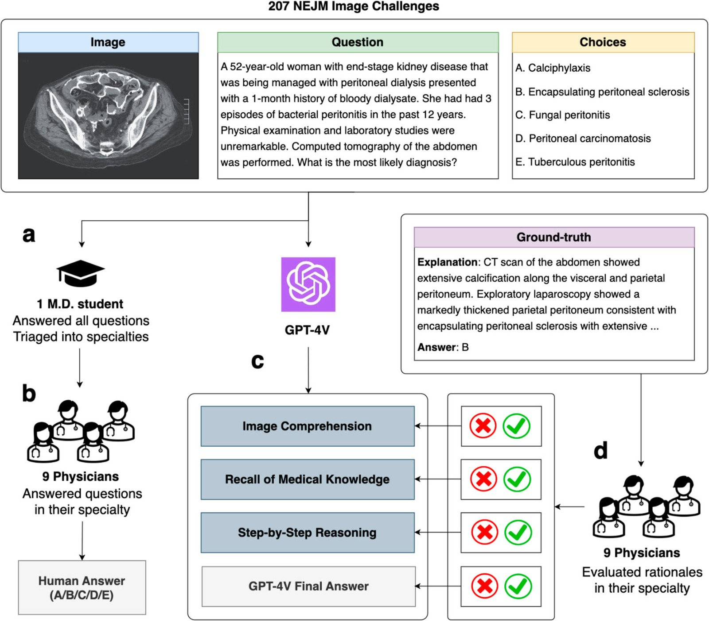

Resumen
El estudio presentado explora el uso de un modelo de inteligencia artificial basado en visión por computadora para la detección y conteo automático de instrumentos quirúrgicos, con el objetivo de abordar el problema de la retención accidental de objetos en el cuerpo de un paciente después de una cirugía, un incidente grave que puede tener consecuencias críticas para la seguridad del paciente.
Los autores señalan que, a pesar de los esfuerzos actuales para prevenir estos incidentes, la dependencia de métodos manuales para contar instrumentos quirúrgicos sigue siendo común, lo que introduce un margen significativo para errores humanos. En este contexto, el estudio propone una solución innovadora mediante la implementación de un modelo de aprendizaje profundo capaz de detectar y contar automáticamente los instrumentos durante una operación quirúrgica.
Para llevar a cabo esta investigación, los autores desarrollaron un conjunto de datos compuesto por 1,004 imágenes que contenían 13,213 herramientas quirúrgicas, distribuidas en 11 categorías diferentes. Utilizando estas imágenes, se entrenó un modelo de inteligencia artificial que fue posteriormente evaluado utilizando métricas estándar de detección de objetos. Los resultados fueron prometedores: el modelo alcanzó una alta precisión del 98.5% y una sensibilidad del 99.9% en la identificación de instrumentos quirúrgicos, demostrando su eficacia incluso en situaciones complejas donde las herramientas estaban superpuestas.
Además, el modelo fue probado en un entorno simulado de cirugía en tiempo real, donde mantuvo un rendimiento sólido con una velocidad de procesamiento de 40.4 fotogramas por segundo, lo que subraya su potencial para ser utilizado en entornos clínicos reales.
En conclusión, este estudio sugiere que el uso de modelos de visión por computadora puede ofrecer una solución efectiva para mejorar la seguridad en el quirófano, reduciendo la dependencia de los métodos manuales y, por lo tanto, disminuyendo la probabilidad de errores humanos. Los autores proponen que se realicen estudios adicionales en entornos clínicos para validar aún más la eficacia de este enfoque y explorar su implementación práctica en el sistema de salud.
Ideas Principales
- Prevención de Retención de Instrumentos Quirúrgicos: El estudio aborda la problemática de los objetos quirúrgicos retenidos accidentalmente en los pacientes después de una cirugía, un error prevenible pero común en la práctica médica, que actualmente depende de métodos manuales propensos a errores humanos.
- Aplicación de Inteligencia Artificial: Se propone y evalúa un modelo de visión por computadora basado en aprendizaje profundo, capaz de detectar y contar automáticamente instrumentos quirúrgicos con alta precisión y sensibilidad, incluso en escenarios complejos con herramientas superpuestas.
- Potencial para Mejorar la Seguridad Quirúrgica: Los resultados sugieren que este modelo de IA podría integrarse en entornos clínicos para mejorar la seguridad del paciente, reducir la carga de trabajo manual en el personal quirúrgico, y disminuir la incidencia de errores en el conteo de instrumentos.
Ficha Técnica
- Título: Hidden flaws behind expert-level accuracy of multimodal GPT-4 vision in medicine
- Fecha de publicación: 24 de agosto de 2023
- Autores: Qiao Jin, Fangyuan Chen, Yiliang Zhou, entre otros
- DOI: 10.1038/s41746-024-01185-7
Conclusiones
El estudio resalta que, aunque GPT-4V tiene un buen rendimiento en precisión, sus errores en razonamientos son preocupantes. Esto sugiere que no se debe confiar completamente en la IA para decisiones médicas sin una evaluación más profunda. En el contexto de la visión artificial y el reconocimiento visual basado en IA, es crucial asegurarse de que los modelos no solo sean precisos en sus respuestas, sino que también comprendan correctamente las imágenes y el contexto médico. La capacidad de interpretar correctamente las imágenes médicas es fundamental para diagnósticos precisos y tratamientos efectivos. Sin esta comprensión, se corre el riesgo de tomar decisiones erróneas que podrían afectar la salud del paciente.
Video
 Imagen de muestra